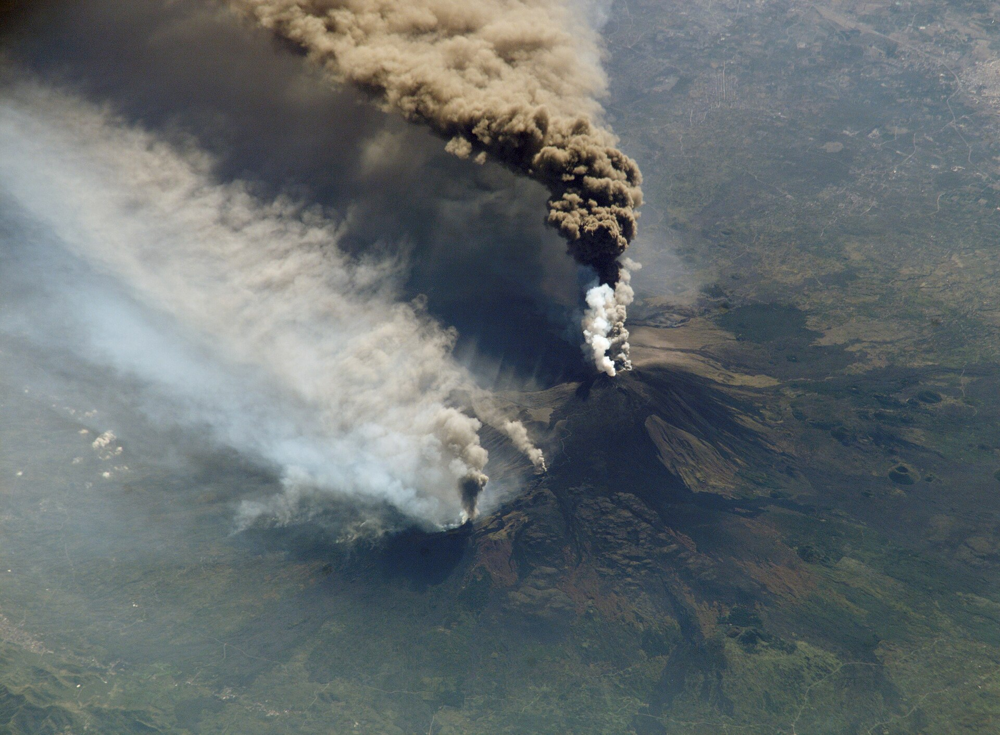

Catania, Taormina and Syracuse · 6-day family itinerary
Two bases, one protected volcano day and a southbound history route for families who want eastern Sicily’s food, stone towns and coast without turning every day into a transfer.

Checked before you commit
This is an illustrative six-day route for two adults and one or two school-age children, with a moderate pace and a preference for food, history and swimming. It uses Catania for two nights and Taormina for three; Syracuse and Noto are a southbound day, not a third base.
Planning boundary: Dates, availability, prices and opening hours are not verified here. A booking-hub link indicates intent only; it does not prove a booking occurred.
Keep the geography honest
Days 1–2: Catania. Use the city as a soft landing and keep Etna flexible. Days 3–5: Taormina. Move once, then use the hill-town base for a coast morning and a slower town day. Day 5: Syracuse and Noto are a long southbound excursion; if heat, energy or transport makes it unsuitable, stay on the Taormina coast instead. Day 6: Depart with a buffer rather than adding another major sight.
Car hire may simplify Etna and the Syracuse/Noto day but adds parking and driving decisions. Public transport can work for the city-to-city spine, while the exact Etna access plan must be checked against the season and current conditions.
Day 1 — Catania market and a short first walk
After arrival, settle near Catania’s historic centre, then make the late-afternoon loop from Piazza del Duomo to the fish market and Via Etnea. Keep the first meal near the accommodation so tired children are not committed to another transfer.
Fallback: If arrival is delayed, skip the market loop and use a nearby meal; do not turn the first evening into a timed attraction.
Day 2 — Etna as the protected anchor
Use the morning for the Etna experience chosen for the party’s mobility and weather tolerance, allowing a long transfer buffer from Catania and a warm layer for altitude. Return for a quiet afternoon rather than pairing the volcano with another major site.
Fallback: If weather, access or family energy makes the mountain unsuitable, use Catania’s Museo Diocesano and a measured Piazza del Duomo walk; recheck all current access and tickets before committing.
Day 3 — Move to Taormina, then earn the view
Transfer after breakfast to Taormina, store bags or check in, and make the Greek Theatre the single major anchor once settled. Sequence Corso Umberto and Piazza IX Aprile afterwards, when the family can stop rather than rush between them.
Fallback: If the hill climb or heat is too much, take the cable-car/transport option only after checking its current operation and spend the afternoon at the accommodation or lower coast.
Day 4 — Coast before the crowds
Start early for Isola Bella and the Taormina Mare shoreline, keeping the morning for water and the nearby path rather than adding a second distant beach. Return uphill for lunch and a protected rest window.
Fallback: If surf, heat or access is unsuitable, replace the swim with a short Giardini Naxos waterfront visit and an unhurried Taormina dinner; confirm beach conditions and transport.
Day 5 — Syracuse and Noto, only with a deliberate return plan
Take the southbound route to Syracuse for Ortigia’s compact lanes, the Piazza Duomo and a lunch stop before continuing to Noto’s Corso Vittorio Emanuele. Treat the drive/rail timing as the day’s constraint and set a firm return window to Taormina.
Fallback: If the combined route becomes too long, choose Ortigia alone and return after lunch; Noto is the first item to remove, not the transfer buffer.
Day 6 — A light departure morning
Keep the final morning local: a café breakfast, a last Corso Umberto purchase or a short viewpoint stop only if it sits on the departure line. Protect baggage, transfer and airport time instead of adding a remote attraction.
Fallback: If departure is early or the transfer is fragile, leave directly from the base after breakfast; check current road/rail conditions and supplier rules.
Planning notes
Keep the route editable. Recheck current schedules, tickets, opening hours, weather, accessibility, baggage rules, prices, cancellation terms and supplier availability at decision time. Do not treat the route, a provider page or a booking-hub link as confirmation.
Build the full plan in Alfred
Generate, validate and edit the complete itinerary in the Alfred app.